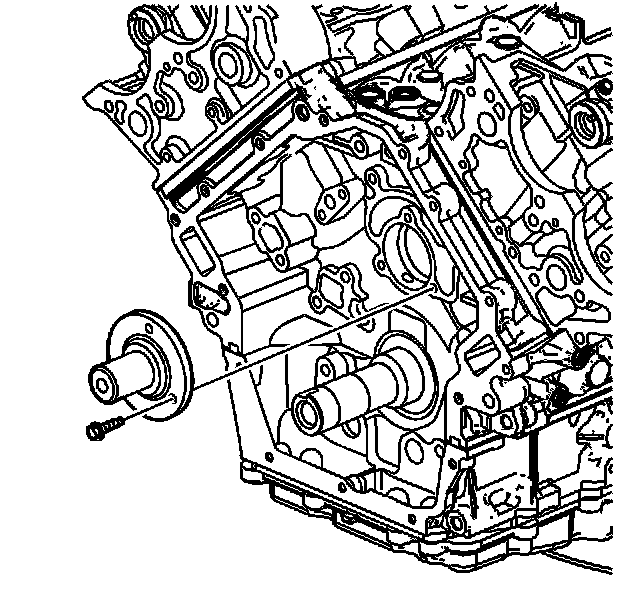

112. Camshaft Intermediate Drive Shaft Installation
Camshaft Intermediate Drive Shaft Installation

Notice: Refer to Fastener Notice (Fastener Notice) .
Install the intermediate sprocket shaft and the retaining bolts.
Tighten the intermediate sprocket shaft bolts to 15 N.m (11 lb ft).